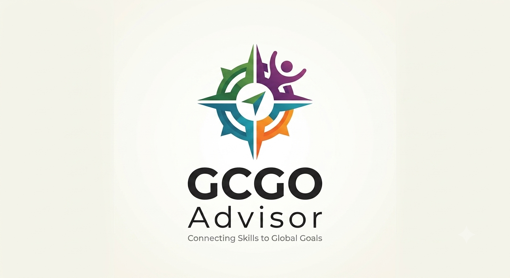

Education
Education focuses on making learning accessible, engaging, and useful for everyone. Projects can support literacy, tutoring, digital skills, school resources, or peer-led workshops that help learners build confidence and opportunity.

Global citizenship and global goals
GCGOs are Global Citizenship and Global Goals focus areas. They help you use your skills, values, and interests to create practical projects that make a positive difference in your community and beyond.
In this quiz, you will explore the area that best matches you: education, health, climate action, or women empowerment.
Choose your impact
Each pathway addresses a different community need.
Read through them, then take the quiz to discover which one best fits your interests and strengths.
Education focuses on making learning accessible, engaging, and useful for everyone. Projects can support literacy, tutoring, digital skills, school resources, or peer-led workshops that help learners build confidence and opportunity.

Health is about improving wellbeing for individuals and communities. You might create awareness campaigns, share reliable health information, encourage healthy habits, or design activities that make care and support easier to access.

Climate action supports a safer, more sustainable future. Projects in this area can reduce waste, protect natural spaces, promote energy-saving habits, improve recycling, or inspire people to make environmentally responsible choices.
Women empowerment helps create fairer opportunities for women and girls to lead, learn, and thrive. Projects may build confidence, celebrate role models, strengthen mentorship, promote equal participation, or address barriers to opportunity.
Assessment
Ready?
Choose the option that feels most like you. Your timer will begin as soon as you press start.